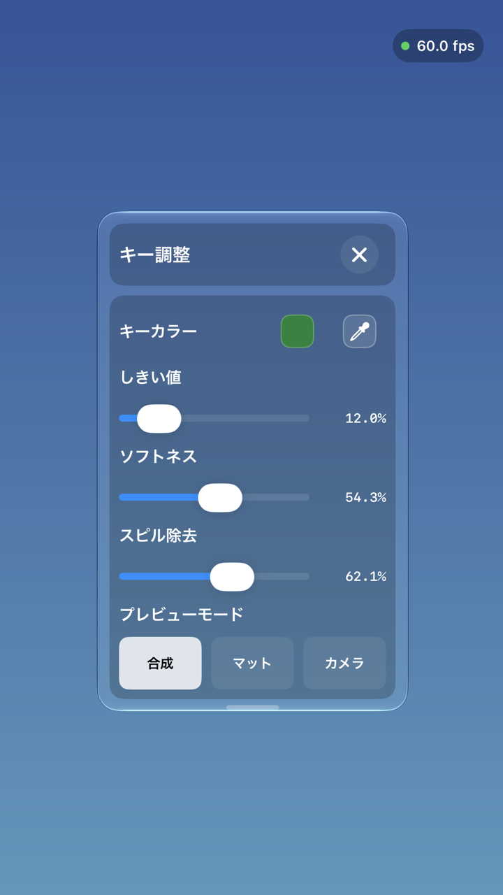
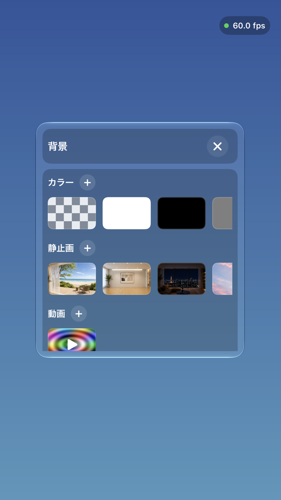
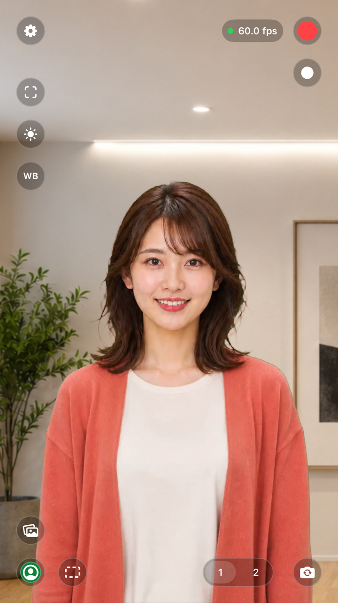

STEP 01
グリーンバックを準備する
人物の後ろに、グリーンまたはブルーの背景布やスクリーンを置きます。背景に明るさのむらや大きなしわが少ないほど、境界を整えやすくなります。
- 人物とスクリーンの間に少し距離を取る
- スクリーン全体へ、できるだけ均一に光を当てる
- 背景と似た色の服や小物を避ける
STEP 02
キーカラーを選ぶ
画面左下の緑色の人物ボタンをタップして「キー調整」を開き、キーカラーのスポイトを選びます。
- スポイトをタップすると、映像が静止します。
- 画面をドラッグして、採色点をスクリーンへ合わせます。
- 必要に応じてピンチし、選びたい場所を見やすくします。
目安：強い影や照明の反射を避け、背景の代表的な色を選びます。

STEP 03
3つの項目で仕上げる
調整するのは「しきい値」「ソフトネス」「スピル除去」の3つです。少しずつ動かし、人物の輪郭や髪の毛を見ながら整えます。
しきい値
選んだキーカラーに近い色を、どこまで背景として扱うかを調整します。
ソフトネス
人物と背景の境界をなじませます。上げすぎると細部が失われるため、少しずつ調整します。
スピル除去
人物の輪郭などに映り込んだグリーンやブルーの色かぶりを抑えます。
確認のコツ：プレビューモードを「マット」に切り替えると、合成範囲をグレースケールで確認できます。
ADJUSTMENT ORDER
- 1しきい値で背景を整える
- 2ソフトネスで境界を整える
- 3スピル除去で色かぶりを抑える
- 4合成とマットを切り替えて確認する
STEP 04
背景を選ぶ
画面左下にある写真のボタンから「背景」を開きます。単色、グラデーション、プリセット静止画のほか、自分の写真や動画も背景に使えます。
- 「＋」から色や写真、動画を追加
- 静止画背景には、ぼかしを設定可能
- 動画は必要な範囲をトリミングして再生
人物と背景の明るさや向きが近い素材を選ぶと、自然になじみやすくなります。

STEP 05
収録する、外部へ送る
合成結果を確認したら、赤いボタンで音声付き動画を録画し、白いボタンで静止画をキャプチャできます。収録した動画と静止画は端末内に保存されます。
HDMIまたはAirPlayを使えば、合成済みの映像をリアルタイムで外部へ出力できます。配信機器や外部モニターと組み合わせるときにも利用できます。
縦でも横でも：PocketKeyerは縦向きと横向きのプロジェクトに対応しています。投稿先や配信の画面に合わせて選んでください。
